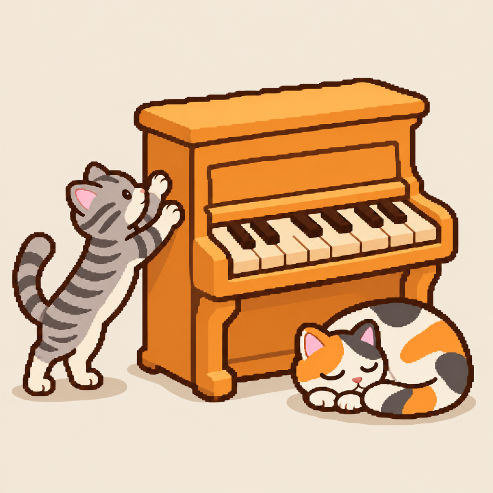
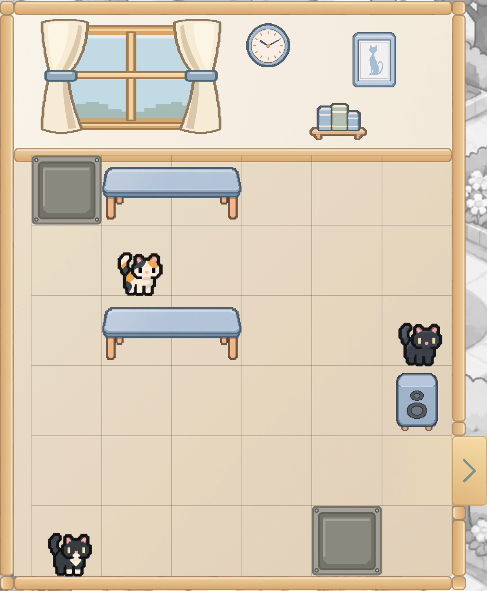

01 / 03
まず、道を空ける。
本棚を上にずらすと、ピアノの右側に通り道ができます。
家具とネコちゃんのスライドパズル
えっ、ネコちゃんそこでお昼寝しちゃうの？
ピアノを玄関から運び出すには、家具をずらして道をつくらなきゃ。ソファを先に動かす？ それとも、ネコちゃんが起きるまでちょっと待つ？
小さな部屋から広い部屋まで、遊べるパズルは全部で999問。
遊び方とヒント
盤面全体が見えている間、本棚とピアノが自動で動きます。説明カードを読みながら、家具の動きを追えます。



01 / 03
本棚を上にずらすと、ピアノの右側に通り道ができます。
02 / 03
ピアノを右へ滑らせたら、出口の高さまで一段下げます。
03 / 03
道が空いたらもう一度右へ。ピアノが玄関を通り抜けます。
先に本棚をずらす？ それとも、ネコちゃんが通り過ぎるのを待つ？ 家具を動かす順番を変えると、別の道が見えてくるかも。
家具をずらして、道をひらく
家具を上下左右にスワイプ。壁やほかの家具、ネコちゃんにぶつかる手前まで滑ります。通り道をつくって、黄金のピアノを右側の出口へ運び出しましょう。
ネコちゃんが動き出すのは、最初に家具をスワイプしてから。動けない状態が約3秒続くとお昼寝し、歩ける空きマスが約5秒続くと自然に起きます。タップで先に起こせますが、すぐには歩き出しません。近くの家具をずらして歩ける場所をつくり、道を空けてくれたら、止まっていた家具をもう一度スワイプ。
ピアノを出口と同じ高さに合わせるには、どこで止まればいい？ その場所から逆にたどると、先にどの家具をどこへ仮置きすればいいかが見えてきます。
時計はクリアまでの時間の記録で、制限時間はありません。ネコちゃんが通り過ぎるのを待つ間に、次の一手を考えても大丈夫。